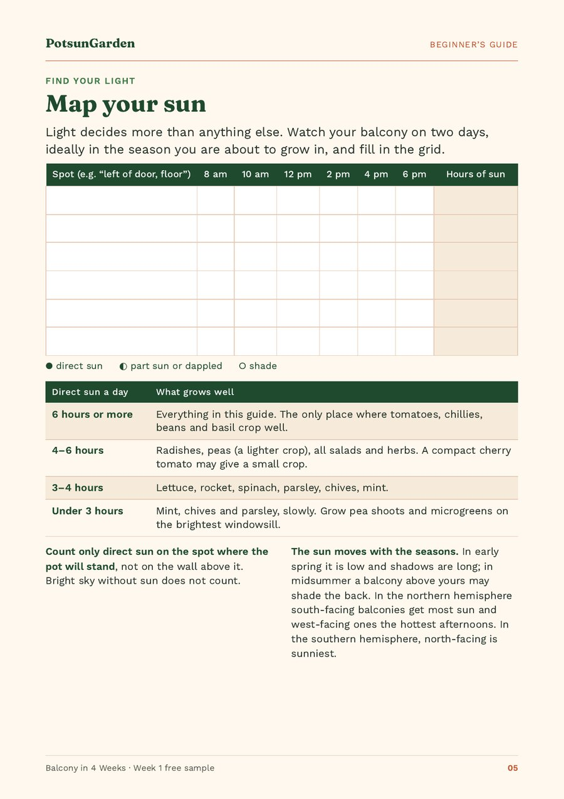

What vegetables can you grow on a north-facing balcony?
Yes, a north-facing balcony can grow food if you grow leaves, not fruit. The best crops are loose-leaf lettuce, rocket (arugula), spinach, mizuna and mustard greens, plus parsley, chives and mint, and pea shoots on a windowsill. Tomatoes, chillies, beans and basil need about 6 hours of direct sun or more, so they rarely do well. Count your real hours of sun first.
Quick facts
| Best crops | Loose-leaf lettuce, rocket (arugula), spinach, mizuna, mustard greens, parsley, chives, mint, pea shoots |
|---|---|
| Skip | Tomatoes, chillies and peppers, beans, courgettes (zucchini), aubergines (eggplant), basil |
| Summer sun | Low sun early and late: on 21 June about 3½ hours after sunrise and 3½ before sunset on an open due-north wall (our calculation, 41°N and 51.5°N) |
| Winter sun | None on a due-north wall between the September and March equinoxes |
| Southern hemisphere | Reversed: north-facing is the sunny side, south-facing the shady one |
Is a north-facing balcony any good for growing vegetables?
It is good for salads and herbs and poor for tomatoes. A north-facing balcony gets the least direct sun of any direction. Crops grown for fruit need the most light, because they have to flower and then ripen. Crops grown for leaves need less, and in summer the cool shade helps them.
Iowa State University's Yard and Garden team puts it plainly: no vegetable is productive in full shade, but crops harvested for their leaves do better in part shade than crops that flower and fruit. Expect slower growth. The upside: on a hot, sunny balcony lettuce and rocket bolt (rush to flower and turn bitter) in July, while on a north-facing one they keep going. Answering a reader with a northern balcony, the University of Maryland said leafy greens could be grown there for most of the summer.
How much sun does a north-facing balcony get?
In the northern hemisphere a north-facing balcony gets some low, weak sun early and late in summer, and none in winter. Buildings opposite, trees and the balcony above you cut that further, so the only way to know your number is to measure it for two days.
In summer: low early-morning and evening sun
Around midsummer the sun rises in the north-east and sets in the north-west, so it can reach a north-facing wall at both ends of the day. We checked how much with NOAA's solar position equations, for an open wall facing due north at the latitudes of New York (about 41°N) and London (about 51.5°N):
- On 21 June the sun is on the north side for about 3½ hours after sunrise and 3½ hours before sunset: in London until about 8:20 am and from about 5:40 pm (BST), in New York until about 9 am and from about 5 pm (EDT).
- It is low. For 2 to 2½ of those 7 hours the sun is under 10° above the horizon, where buildings usually block it, and it always comes in from the side, so it is weaker than an hour of midday sun.
- In late April and late August it is about 3 hours a day, and only 1 to 1½ hours of that is more than 10° up.
Those are best-case figures for a clear view. A balcony facing north-east keeps more morning sun; one facing north-west keeps more evening sun.
In winter: none
From the September equinox to the March equinox the sun rises and sets south of due east and west, so a due-north wall gets no direct sun at all. That is why winter salads in pots on a north-facing balcony mostly sit and wait.
Bright shade is not the same as direct sun
Open sky in front of you still grows leaves, slowly, and is far better than a dim corner under a deep overhang. Light bouncing off a pale wall helps a little, but it does not replace sun.
In the southern hemisphere it is the other way round
In Australia, New Zealand and South Africa a north-facing balcony is the sunny one. Read this page as a guide to south-facing balconies.
Count your hours first
Before you buy a single pot, find out what your balcony really gets. On two days, look at each spot where a pot could stand every two hours, note sun, part sun or shade, and add up the hours of direct sun. Our guide shows how to count your hours of direct sun step by step. On a north-facing balcony the railing edge and the floor by the door can differ by hours, so measure each spot. Then pick crops from the table below.
What vegetables grow on a north-facing balcony?
Leafy greens and a few tough herbs: loose-leaf lettuce, rocket, spinach, mizuna, mustard greens, pak choi (bok choy) picked young, parsley, chives and mint. With 3–4 hours of direct sun, add radishes and spring onions (scallions). With under 3 hours, stick to herbs and pea shoots. Skip fruiting crops.
| Direct sun a day | What to grow | Depth of mix |
|---|---|---|
| 4–6 hours (rare here) | Everything below, plus radishes, spring onions and dwarf peas | 6–10 in (15–25 cm) |
| 3–4 hours | Loose-leaf lettuce, rocket, spinach, mizuna, mustard greens, parsley, chives, mint | 6 in (15 cm) lettuce and rocket; 8 in (20 cm) spinach, chives, mint; 10 in (25 cm) parsley |
| Under 3 hours | Mint, chives and parsley (slowly); try spinach and mustard greens; pea shoots indoors | 8–10 in (20–25 cm) |
This matches the extension services: NC State says 3–6 hours of sun is enough for leaf crops, and Iowa State lists spinach, pak choi and mustard greens for moderate shade of 2–4 hours.
Leafy greens: the best bet
Grow cut-and-come-again lettuce: sow a trough, pick the outer leaves and let the centre keep growing. Rocket, baby spinach, mizuna and mustard greens work the same way, and pak choi and chard are good as baby leaves.
Herbs that cope with less light
Parsley, chives and mint are the herbs for a north-facing balcony; give mint its own pot, because it spreads. Sow coriander (cilantro) in small batches, since it runs to seed when stressed. Skip basil, rosemary and thyme, which want sun. Buy herbs as young plants to save weeks.
Quick crops worth a try with 3–4 hours
Radishes, spring onions and beetroot (beets) for baby leaves are worth one pot each. Radishes are the gamble: in low light they can make leaves and no roots, so thin them well.
Pea shoots and microgreens: the low-light shortcut
These are cut within weeks, so they need little light. Soak edible garden pea seed, sow it thickly in a pot on your brightest windowsill and cut the shoots at 4–6 in (10–15 cm). Never use sweet pea seed: sweet peas are an ornamental flower and poisonous.
What won't grow well (and when to try anyway)
Skip tomatoes, chillies and peppers, beans, courgettes (zucchini), aubergines (eggplant) and basil. The University of Maryland Extension gives warm-season crops like these 6–8 hours of sun, against 3–5 hours for lettuce, spinach and Asian greens. If you measured under 4 hours, skip them this year. If the railing edge gets 5–6 hours in midsummer, one bush cherry tomato in a 5-gallon (20-litre) pot is a fair experiment, not a harvest plan.
How to get more out of the light you have
- Put the hungriest crop in the brightest spot, usually the railing edge away from the overhang. Use pot stands, or railing planters fitted on the inside of the railing with proper brackets, and check your building rules first.
- Move pots with the seasons, because the sun moves with the seasons. Re-check each spring and autumn.
- Keep surfaces pale. A light wall or floor makes shade a little brighter; it does not turn shade into sun.
- Grow lights are an option if you want to keep herbs going indoors through winter.
Watering and feeding in shade
Shaded pots dry slowly, so overwatering is the bigger risk; the RHS names it the most common cause of losing container plants. Use the finger test: push a finger 1 in (2–3 cm) into the mix and water only if it is dry at that depth, until water runs out of the holes. A balcony under an overhang gets little rain, so check it even in a wet week. Fresh bagged potting mix feeds plants for about five to six weeks; after that, give leafy crops a balanced liquid feed every two weeks.
A year on a north-facing balcony
- March to May: sow lettuce, rocket and spinach; buy herbs as plants.
- June to August: your best months, when salads keep going here and bolt elsewhere. Sow a little every three weeks.
- September and October: last sowings of salads and hardy greens.
- November to February: no direct sun. Pick lightly and grow pea shoots indoors.
In the southern hemisphere, shift each block by six months.
A simple starter plan: five pots
With around 3 hours at your best spot, start with these, using the pot sizes for each crop:
- A trough of cut-and-come-again lettuce, 6 in (15 cm) of mix.
- A 2-gallon (8-litre) pot of rocket.
- A 2-gallon (8-litre) pot of spinach, 8 in (20 cm) deep.
- A 5-gallon (20-litre) pot of parsley.
- A 2-gallon (8-litre) pot of chives, or mint on its own.
Add a windowsill tray of pea shoots. New to pots? Your first week of setting up goes from sun check to filled pots, one task a day. Balcony in 4 Weeks takes crops like these from sowing to first harvest, with crop cards and a calendar by climate (€9).
Common problems on shady balconies
- Tall, pale, floppy seedlings: too little light. Move pots to the railing edge and sow a few weeks later in spring.
- Slow growth: normal in shade. Pick lightly and leave each plant enough leaves.
- Slugs and snails: they love damp shade. Check pots with a torch (flashlight) on damp evenings, including under the rims.
- Radishes all leaf: too little light or too crowded. Thin them, or eat the leaves.

Frequently asked questions
Can I grow tomatoes on a north-facing balcony?
Usually not well. Tomatoes need about 6 hours or more of direct sun to flower and ripen fruit, and a north-facing balcony rarely gets that. If your open railing edge gets 5–6 hours in midsummer, try one bush cherry tomato in a 5-gallon (20-litre) pot as an experiment, and grow salads everywhere else.
Do north-facing balconies get any direct sun?
In the northern hemisphere, only in the warmer half of the year. Around midsummer an open north-facing balcony can get low sun for a few hours after sunrise and before sunset; from the September to the March equinox a due-north wall gets none. Buildings and the balcony above often take more, so count your hours of direct sun for two days.
What is the easiest vegetable for a shady balcony?
Loose-leaf lettuce grown as cut-and-come-again. Sow it in a trough with 6 in (15 cm) of mix, pick the outer leaves when they are big enough, and it keeps growing for weeks. Rocket and spinach are close behind. On the brightest windowsill, pea shoots are even easier and ready in a few weeks.
Do I need a grow light for a north-facing balcony?
No. Lettuce, rocket, spinach, parsley, chives and mint grow outside on a north-facing balcony from spring to autumn without one, just more slowly than in sun. A grow light is only worth thinking about if you want to keep herbs going indoors through a dark winter; pea shoots on a bright windowsill need none.
Is a north-facing balcony sunny in Australia or New Zealand?
Yes. In the southern hemisphere the sun crosses the northern sky, so a north-facing balcony gets the most sun, like a south-facing one in the UK or US. There it suits tomatoes, chillies and basil. The shady balcony is the south-facing one, and the crops on this page are the ones to grow there.
Why are my seedlings tall and floppy on my shady balcony?
They are stretching for light. Seedlings that get too little light grow long, pale and weak stems. Move the pot to your brightest spot, usually the railing edge, sow a few weeks later in spring when days are longer, and choose crops picked as leaves. Seedlings that have already flopped rarely recover, so sow again.
Sources
Figures come from our guide Balcony in 4 Weeks (2nd edition) and the free Week 1 PDF unless a source below is named in the text. Sources checked on 3 November 2026.
- Iowa State University Extension, Yard and Garden: Growing edible plants in shady areas
- University of Maryland Extension: Growing vegetables in containers and salad tables
- NC State Extension: Vegetable gardening in small spaces
- Ask Extension (University of Maryland Home and Garden Information Center): Balcony garden, a north-facing balcony question
- RHS: Container maintenance
- NOAA Global Monitoring Laboratory: General solar position calculations (PDF), the equations we used for our sun calculation